This is a slightly more advanced example in which we demonstrate the use of spatial adaptivity in time-dependent problems. We discuss the implementation of the spatially adaptive version of oomph-lib's unsteady Newton solver, Problem::unsteady_newton_solve(...), and explain why the assignment of initial conditions should be performed by overloading the Problem::set_initial_condition() function. We also discuss briefly how oomph-lib's generic dump and restart functions deal with adaptive meshes.
For this purpose consider the following problem:
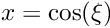 in the quarter-circle domain 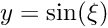, bounded by the coordinate axes and the unit circle, subject to Neumann boundary conditions,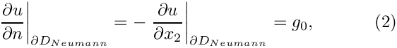 along the horizontal domain boundary 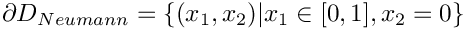, and to Dirichlet boundary conditions,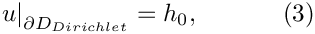 elsewhere.
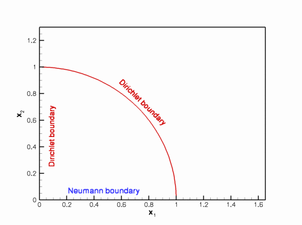
The initial conditions are given by
Sketch of the domain and the boundary conditions. 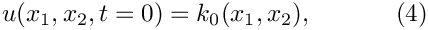 where the functions and 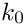 are given. and 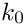 are given. |
We choose the functions and so that
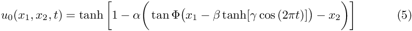
is the exact solution.
The solution represents the "usual" tanh profile, whose steepness is controlled by the parameter  so that for 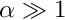 the solution approaches a step. The step is oriented at an angle
so that for 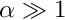 the solution approaches a step. The step is oriented at an angle  against the
against the  axis and its position varies periodically. The parameter
axis and its position varies periodically. The parameter  controls the amplitude of the step's lateral displacement, while
controls the amplitude of the step's lateral displacement, while  determines the rate at which its position changes. For 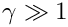 , the step remains stationary for most of the period and then translates rapidly parallel to the
determines the rate at which its position changes. For 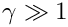 , the step remains stationary for most of the period and then translates rapidly parallel to the  axis, making this a very challenging problem.
axis, making this a very challenging problem.
The figure below shows a snapshot of the animated solution, obtained from the spatially adaptive simulation discussed below, for the parameter values 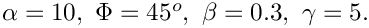

The mesh adaptation in response to the translation of the step can be seen more clearly in this contour plot, taken from another animation of the solution.

Background: Spatial adaptivity in time-dependent problems
Enabling spatial adaptivity in time-dependent problems involves essentially the same steps as for steady problems:
- The domain must be discretised with a mesh that is derived from the
RefineableMeshbase class. - An
ErrorEstimatorobject must be created and passed to the mesh. - The empty virtual functions
Problem::actions_before_adapt()andProblem::actions_after_adapt()may be overloaded to perform any actions that are required before or after the mesh adaptation, such as the deletion or recreation of anyFaceElementsthat apply flux boundary conditions.
Once these steps have been performed, a spatially adaptive solution can be computed with a three-argument version of oomph-lib's unsteady Newton solver Problem::unsteady_newton_solve(...):
The arguments to this function are as follows:
- The
doubledtspecifies the (fixed) timestep. - The
unsignedmax_adaptspecifies the maximum number of spatial adaptations allowed. - The
boolfirstindicates if the first timestep is performed. This argument is required to allow the automatic re-assignment of the initial conditions following any mesh adaptations during the computation of the first timestep.
Given these arguments, the unsteady Newton solver solves the non-linear system of spatially and temporally discretised equations to advance the solution from time  to 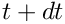 . Once the solution at time has been obtained, error estimates are computed for all elements. If any elemental error estimates are outside the target range, the solution is rejected and the mesh is adapted. In the course of mesh adaptation the existing solution (the nodal values and the history values) at time are interpolated onto the new mesh before recomputing the solution. This process is repeated until the error estimates are within the target range, or until the maximum number of adaptations, specified by the parameter
to 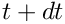 . Once the solution at time has been obtained, error estimates are computed for all elements. If any elemental error estimates are outside the target range, the solution is rejected and the mesh is adapted. In the course of mesh adaptation the existing solution (the nodal values and the history values) at time are interpolated onto the new mesh before recomputing the solution. This process is repeated until the error estimates are within the target range, or until the maximum number of adaptations, specified by the parameter max_adapt, is exceeded, just as in the steady case.
Here is an illustration of the procedure for a 1D problem:
This procedure is the obvious generalisation of the procedure for steady problems. However, in time-dependent problems two additional issues arise:
- In a steady problem the interpolation of the solution onto the adapted mesh (step 4 in the above sketch) merely serves to provide an initial guess for the solution on the refined mesh. It is irrelevant if the interpolation from the coarse mesh provides a poor approximation of the actual solution as the solution is completely recomputed anyway.
In an unsteady problem, we also have to interpolate the history values (the solution at previous timesteps in a BDF scheme) onto the adapted mesh. Their values are not changed when the solution is advanced from time to 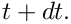 In time-dependent problems, the benefit of repeated mesh adaptations (i.e. max_adapt> 1) is therefore limited by the fact that mesh refinement cannot improve their accuracy – the history values are always given by the (possibly poor) approximations obtained by interpolation from the coarser mesh employed at the previous timestep. We therefore recommend limiting the number of spatial adaptations tomax_adapt= 1. We stress that, in practice, this is not a serious restriction because the time-integration procedure will only provide (temporally) accurate results if the timestepdtis so small that the solution at time only differs slightly from that at time . One level of mesh adaptation per timestep should therefore be sufficient to adapt the mesh in response to these changes. - The only exception to this recommendation arises during the computation of the first timestep, illustrated in the following sketch: 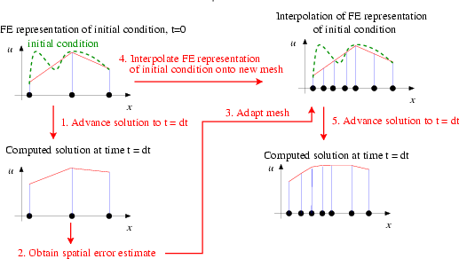When computing the first timestep, the solution on the initial mesh will have been created by assigning the nodal values according to the analytical initial condition (4). If the initial mesh is very coarse (as it should be), the finite-element representation of the initial condition is likely to be very poor, as shown in the above sketch. Clearly, the interpolation from the coarse onto the fine mesh cannot recover any small-scale features in the initial condition that were missed by its representation on the coarse mesh. It is therefore better to re-assign the initial condition (the values and the history values!) on the adapted mesh, as shown in this sketch:Sketch of the mesh adaptation during the computation of the first timestep.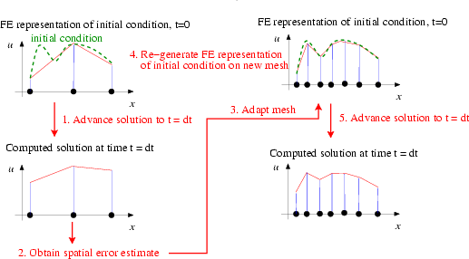With this procedure, repeated mesh adaptations will improve the accuracy of the solution, therefore much larger values ofSketch of the modified mesh adaptation during the computation of the first timestep.
max_adaptcan (and should!) be specified when the first timestep is computed. The unsteady Newton solverProblem::unsteady_newton_solve(...)performs the revised procedure if the boolean argumentfirstis settrue. In that case, the values and history values on the adapted mesh are (re-)assigned by calling the functionwhich is defined as an empty virtual function in theProblem::set_initial_condition()Problembase class. You should overload it in your derivedProblemto ensure that your specific initial conditions are assigned by the mesh adaptation procedures. [In fact, the functionProblem::set_initial_condition()is not quite empty – not re-setting the initial condition when performing mesh adaptations during the first timestep of a time-dependent simulation seems "so wrong" that the function issues a warning message. Although the overloading of this function is not strictly necessary if the initial conditions can be represented exactly by the interpolation from the coarse mesh onto the fine mesh, we consider it good practice to do so, for reasons discussed in another tutorial.]
Overview of the driver code
Equipped with this background information, the driver code for our example problem is easy to understand, if somewhat lengthy. [Using an example with Dirichlet boundary conditions along the entire domain boundary would have shortened the code significantly but we deliberately chose an example with Neumann boundary conditions to demonstrate that the functions Problem::actions_before_adapt() and Problem::actions_after_adapt() may be used exactly as in the steady computations.] We will not discuss the methodology for applying flux-type boundary conditions in problems with spatial adaptivity in detail, but refer to the discussion provided in the earlier steady example.
Overall, the code is a straightforward combination of the driver code for the steady Poisson problem with flux boundary conditions and spatial adaptivity and the driver code for the unsteady heat equation without spatial adaptivity.
Global parameters and functions
As usual, we store the problem parameters in a namespace, TanhSolnForUnsteadyHeat, in which we also specify the source function, the prescribed flux along the Neumann boundary and the exact solution.
Representing the curvilinear domain boundary by a GeomObject
As discussed elsewhere, oomph-lib's mesh adaptation procedures require curvilinear domain boundaries to be represented by GeomObjects which describe the object's shape via their member function GeomObject::position(...). This function exists in two versions:
- The two-argument version,
GeomObject::position(xi,r)computes the position vector,r, to the point on/in theGeomObject, parametrised by the vector of intrinsic coordinates,xi. - The three-argument version
GeomObject::position(t,xi,r), wheretis anunsigned, computes the position vector at thet- th previous timestep.
In the current problem, the domain boundary is stationary, therefore the steady and unsteady versions of the function are identical. Here is the complete source code for the MyUnitCircle object which we will use to represent the curvilinear domain boundary:
The main function
As before, we use command line arguments to (optionally) specify a restart file. We store the command line arguments in the namespace CommandLineArgs and build the Problem object, passing the pointer to the source function. Next we specify the time-interval for the simulation and set the error targets for the spatial adaptation.
We create and initialise the boolean flag that indicates if the first timestep is computed, and choose a large initial value for the number of permitted mesh adaptations. We then assign the initial conditions on the coarse initial mesh and retrieve the timestep (chosen when the initial conditions are assigned in set_initial_condition() ) from the problem's Time object.
If the simulation has been restarted, the first timestep is not the step at which the initial condition has to be assigned, therefore we reset the first and max_adapt parameters to their appropriate values. If the run is not restarted, the problem will have been built with a very coarse initial mesh (comprising just three elements). We don't need an error estimator to tell us that this is too coarse to represent the solution accurately and apply two levels of uniform refinement before solving the problem. Note that we refine the entire problem, not just the mesh to ensure that Problem::actions_before_adapt() and Problem::actions_after_adapt() are executed and the equation numbering scheme is re-generated. Problem::refine_uniformly() also interpolates the solution from the coarse initial mesh onto the refined mesh but, as discussed above, this will lead to a very poor representation of the initial condition. Therefore we re-assign the initial condition on the refined mesh and document the finite-element representation of the initial condition.
The time-stepping loop itself is very similar to that used in the example without spatial adaptivity. Here we call the three-argument version of the unsteady Newton solver Problem::unsteady_newton_solve(...) and re-set the parameters max_adapt and first to their appropriate values once the first step has been performed.
The problem class
As discussed above, the problem class mainly contains verbatim copies of the member functions in the corresponding steady and unsteady problems:
The problem constructor
The problem constructor combines the constructors of the steady and unsteady problems. We start by creating a DocInfo object to control the output, set the parameters for the exact solution and create the TimeStepper:
We create the GeomObject that describes the curvilinear domain boundary and pass it to the mesh constructor:
Next, we create the surface mesh that contains the prescribed flux elements and combine the two submeshes to the Problem's global mesh. We create an instance of the Z2ErrorEstimator and pass it to the bulk mesh.
We pin the nodal values on the Dirichlet boundaries and select the central node in the unrefined three-element mesh as the control node at which the solution is documented in the trace file.
Finally, we complete the build of all elements by passing the relevant function pointers to the elements, and assign the equation numbers.
Other member functions
The remaining member functions
actions_after_newton_solve()actions_before_newton_solve()actions_after_implicit_timestep()actions_before_implicit_timestep()actions_before_adapt()actions_after_adapt()set_initial_condition()create_flux_elements(...)delete_flux_elements(...)doc_solution()dump_it(...)restart(...)
are identical (or at least extremely similar) to those in previous examples, so we do not list them here. You can examine the functions in detail in the source code two_d_unsteady_heat_adapt.cc.
Dump/restart with spatial adaptivity
It is worth examining the dump and restart functions, however, as they demonstrate that the generic versions defined in the Problem base class can also deal with adaptive problems – a non-trivial task!
Since details of their implementation are hidden from the user, we briefly comment on the various tasks performed by these functions. The main task of the Problem::read(...) function is to read values (and history values) of all Data objects from a file and to assign these values to the appropriate Data (and Node) objects in the Problem. This assumes that the Problem's constituent Meshes, elements, Nodes and Data objects have been created, and that the Problem's various pointer-based lookup schemes access them in the order they were in when the Problem was dumped to the restart file. In a non-adaptive computation, the number of elements and the number of Data objects remain constant throughout the simulation and the Problem::read(...) function can be called as soon as the Problem has been built – usually by its constructor. (The Problem constructor always builds and enumerates its constituent objects in the same order.)
In a simulation with spatial adaptivity the number of elements, Nodes and Data objects varies throughout the computation. It is therefore necessary to re-generate the Problem's refinement pattern before the Data values can be read from the restart file. This is achieved (internally) by calling the function RefineableMesh::dump_refinement(...) for all refineable meshes before the Data is dumped. This function writes the Mesh's refinement pattern to the restart file, using a format that can be read by the corresponding member function RefineableMesh::refine(...) which adapts an unrefined mesh so that its topology and the order of its Nodes and elements is recreated.
Comments and exercises
The plots below show the time history of various parameters.
- The upper graph compares the solution at the control node (red line) against the exact solution (green line).
- The middle graph shows the position of the step by plotting its intercept with the axis as a function of time, and the error of the solution.
- The lower graph illustrates the evolution of the adaptive spatial refinement process: The green line illustrates the total number of elements; the blue and red lines show the number of elements that are refined and unrefined at each timestep.

The plots illustrate clearly how the mesh is adapted as the step moves through the domain – the peaks in the number of refined/unrefined elements per timestep coincide with the periods during which the step moves very rapidly. The increase in the error during these phases is mainly due to the temporal error – the animation shows that the computed solution lags behind the exact one. We will address this by adding adaptive time-stepping in another example.
Exercises
- Confirm that the error during the periods of rapid change in the solution is due to the temporal error by repeating the simulation with a smaller/larger timestep and/or a time-stepping scheme with higher/lower order (e.g. BDF<1> or BDF<4>).
- Assess the importance of re-assigning the initial conditions when spatial adaptations are performed during the computation of the first timestep.
- Compare the finite-element representation of the initial condition(contained in the file
RESLT/soln0.dat) against that obtained when the re-assignment of the initial conditions after the two calls toproblem.refine_uniformly()in themainfunction is suppressed. - Comment out the calls to
problem.refine_uniformly()and setfirst=falsethroughout themainfunction and compare the computed results against those obtained with
the correct procedure.
- Compare the finite-element representation of the initial condition(contained in the file
Source files for this tutorial
- The source files for this tutorial are located in the directory:
demo_drivers/unsteady_heat/two_d_unsteady_heat_adapt/ - The driver code is:
demo_drivers/unsteady_heat/two_d_unsteady_heat_adapt/two_d_unsteady_heat_adapt.cc
PDF file
A pdf version of this document is available.